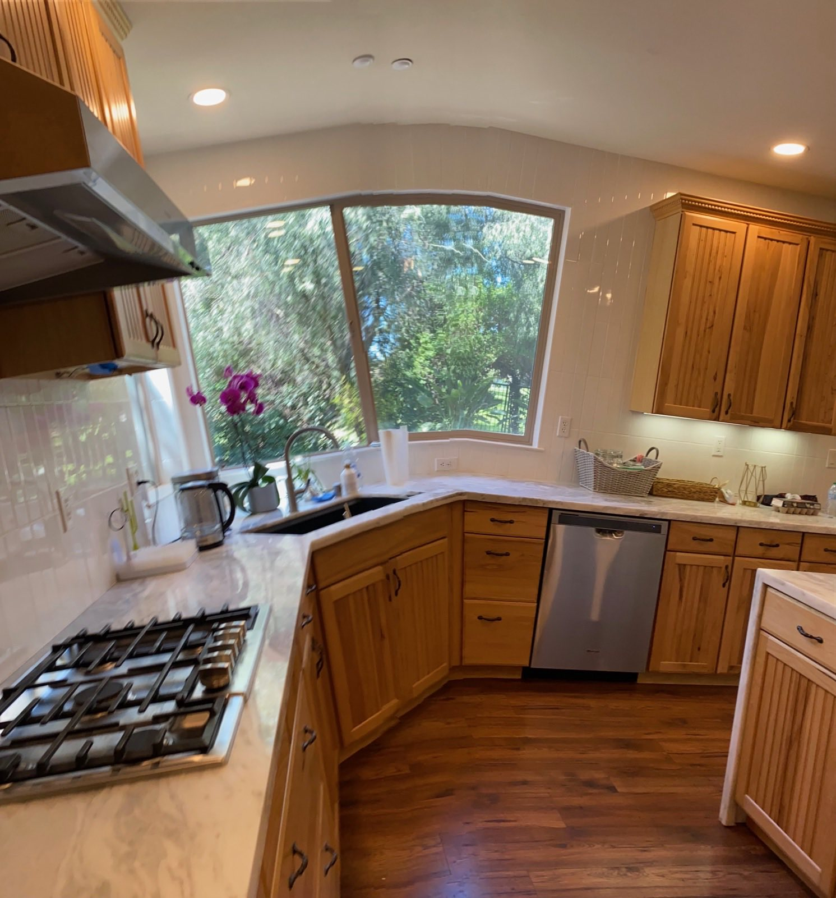
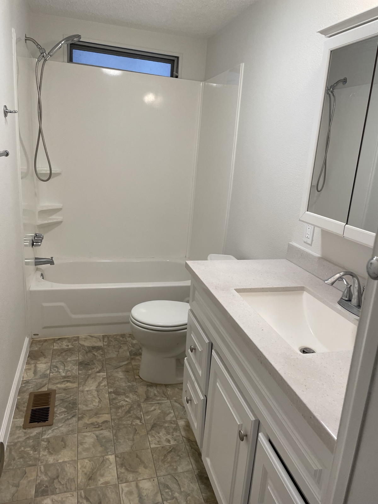
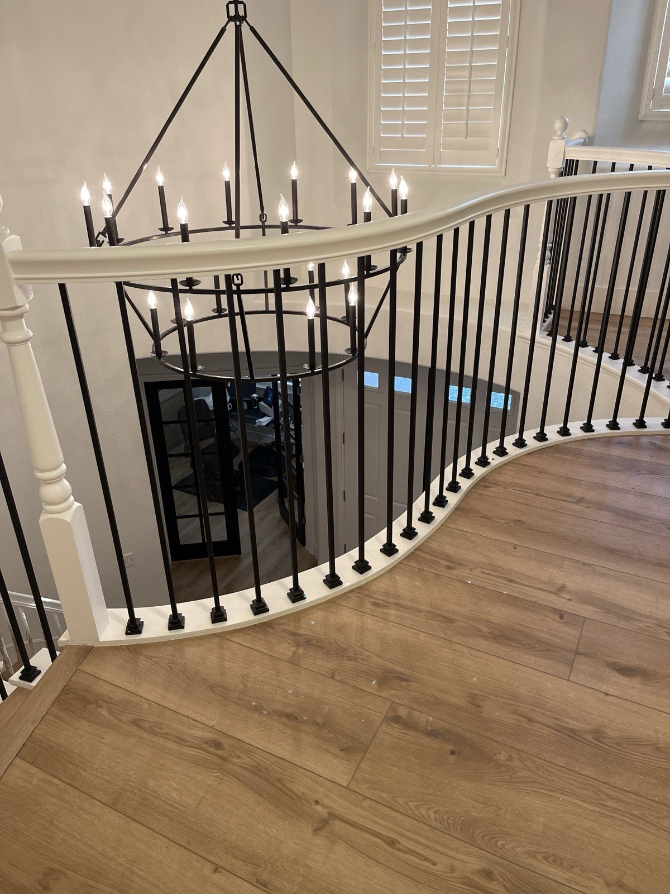
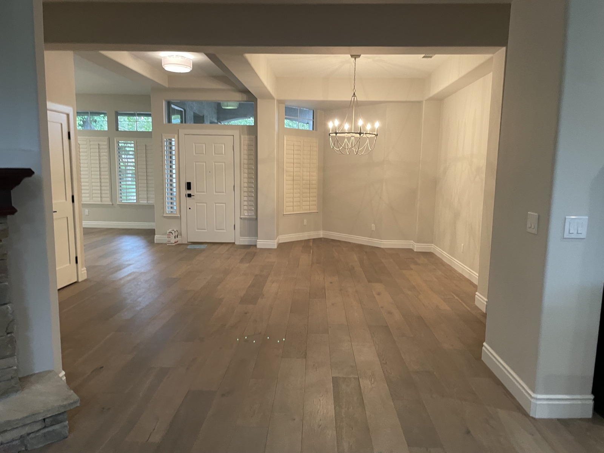
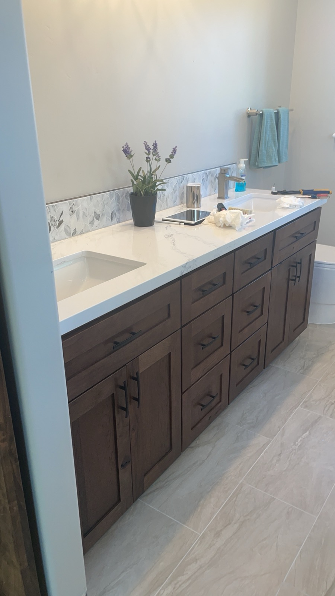
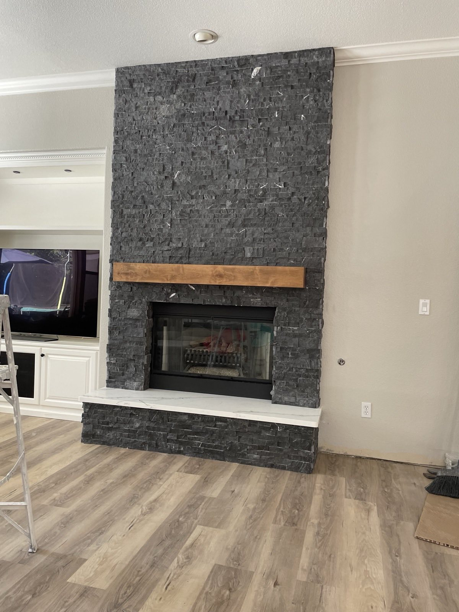

Renovación de cocinas
Proyecto de cocina con gabinetes de madera
Proyecto de cocina con cálidos gabinetes de madera, estufa de gas, fregadero estilo granja, lavavajillas de acero inoxidable y una ventana grande con vista al patio.
Explore algunos ejemplos de trabajos de reparación, renovación, pisos, azulejo, carpintería y mejoras del hogar realizados por M&M Handyman.

Renovación de cocinas
Proyecto de cocina con cálidos gabinetes de madera, estufa de gas, fregadero estilo granja, lavavajillas de acero inoxidable y una ventana grande con vista al patio.

Renovación de baños
Proyecto de baño con pared decorativa de azulejo, lavamanos, cubierta del tocador, inodoro y acabados neutros coordinados.

Escaleras y barandales
Escalera interior con pasamanos blanco curvo, balaustres de metal negro, postes decorativos y piso de madera a juego.

Pisos
Área de estar interior con piso de tablas anchas con apariencia de madera y acabados de pared en tonos neutros.

Carpintería y gabinetes
Detalle de gabinetes con puertas y cajones de acabado oscuro, herrajes negros y una cubierta de color claro.

Reparaciones generales del hogar
Chimenea con revestimiento de azulejo de piedra oscura, repisa de acento de madera y acabado interior coordinado.
Atendemos Sacramento y sus alrededores.
Correo electrónico: Jm03to18@gmail.com